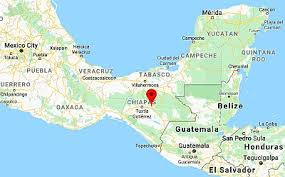
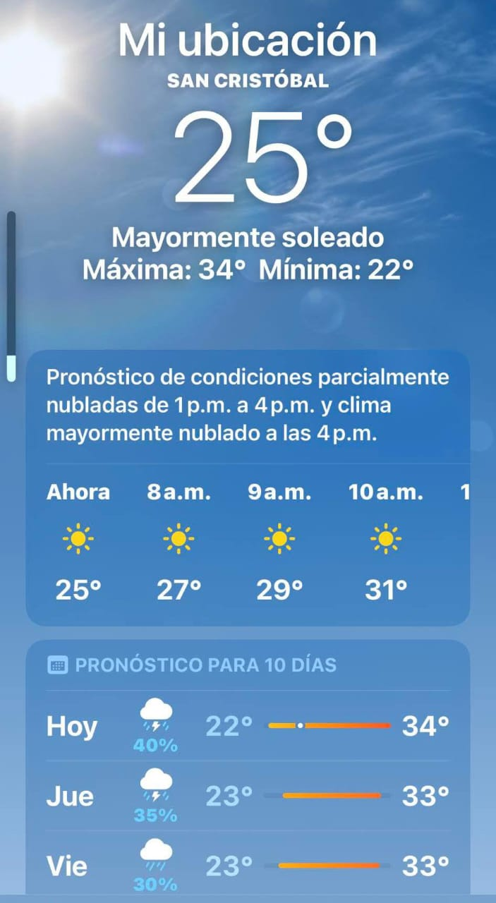
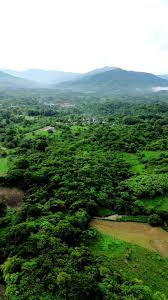

Historia
San Cristóbal, es una localidad situada a 300 metros sobre el nivel del mar, lo que influye significativamente en su clima. Su ubicación geográfica y altitud determinan condiciones meteorológicas particulares, caracterizadas por temperaturas frescas, lluvias estacionales y variaciones climáticas a lo largo del año.

En las últimas décadas, la región ha experimentado cambios notables en su clima, lo que ha generado preocupación entre sus habitantes. Fenómenos como el aumento de la temperatura, precipitaciones irregulares y la presencia de eventos extremos han afectado la vida cotidiana, la economía y la seguridad en la zona. Este estudio tiene como objetivo analizar las condiciones climáticas de San Cristóbal, sus variaciones recientes y el impacto que estos cambios han tenido en la población y el entorno.

En el pasado, albergaba un número considerable de personas indígenas, pero con el tiempo, muchas han emigrado
o han fallecido, reduciendo su presencia en la comunidad. A su vez, otras personas han encontrado en San Cristóbal un refugio,
estableciendo su residencia en busca de mejores condiciones de vida.